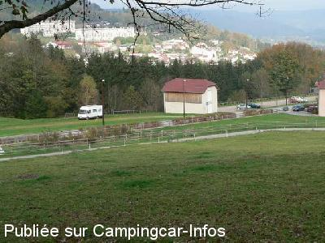

APN = Parking toléré jour/nuit de :
REMIREMONT
(N° 298)
Accès/adresse :
Route d'Hérival
88205 REMIREMONT
88205 REMIREMONT
Latitude : (Nord) 48.007° Décimaux ou 48° 0′ 25′′
Longitude : (Est) 6.584° Décimaux ou 6° 35′ 2′′
Tarif : Gratuit
Services :
Autres informations :
Deux parkings, un gravillonné, l'autre en herbe, juste en face du club hippique.
Tél Office du Tourisme + 33 (0)329 622 370
http://www.ot-remiremont.fr/

Le 05/11/2006 par Jipé
de
laurent
le 01/11/2011 :
Parking très calme la nuit, mais prévoir les cales car très en pente. Le sol est en gravier et sablonneux, je m'y suis juste arrêté pour la nuit...
Parking très calme la nuit, mais prévoir les cales car très en pente. Le sol est en gravier et sablonneux, je m'y suis juste arrêté pour la nuit...
de
martoine
le 03/04/2010 :
Nous y sommes passés alors qu'il faisait nuit et qu'il pleuvait. Le stationnement que nous avons trouvé (qui semblait correspondre aux photos) était très boueux, glissant et en pente relativement forte. Nous avons préféré continuer notre route que d'y passer la nuit mais nous y reviendrons peut-être.
Nous y sommes passés alors qu'il faisait nuit et qu'il pleuvait. Le stationnement que nous avons trouvé (qui semblait correspondre aux photos) était très boueux, glissant et en pente relativement forte. Nous avons préféré continuer notre route que d'y passer la nuit mais nous y reviendrons peut-être.
de
laetitia
le 15/08/2008 :
Je confirme les commentaires précédents. Nous avons passé 3 nuits sur cette aire et pas de souci, très calme mais calage obligatoire.
Je confirme les commentaires précédents. Nous avons passé 3 nuits sur cette aire et pas de souci, très calme mais calage obligatoire.
de
jipe
le 03/11/2006 :
Après calage du CC, une nuit au grand calme. Le matin, balade en forêt : sentier botanique. Pour les courageux, un parcours de santé à deux niveaux de difficulté.
Après calage du CC, une nuit au grand calme. Le matin, balade en forêt : sentier botanique. Pour les courageux, un parcours de santé à deux niveaux de difficulté.